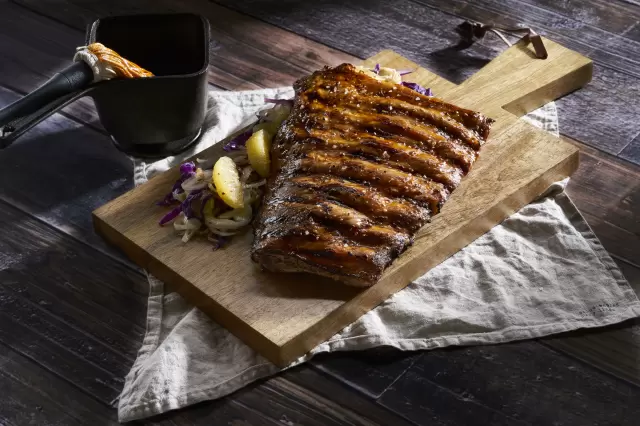

Comer costillas nunca fué tan rico. Podes acompañarlas con deliciosas guarniciones como cebollas, tomates deshidratados caramelizados o simplemente con unas papas al horno.


Ingredientes
- 600 gramos de costillitas de cerdo
- Salsa bbq a gusto. Sal y pimienta. Mix de especias
- 2 Cebollas grandes
- 3 cucharadas de Miel
- 3 Tomates
- 200 tomates disecados
- 1 naranja
Preparación
- Limpiar la costillas de cerdo amara y salpimentar. Con la ayuda de un pincel barnizar toda la costilla de cerdo y dejar reposar 30 minutos.
- Colocarla en el grill aproximadamente 10 minutos por lado o al gusto de cocción deseada. Si se desea se puede continuar barnizando la carne con más salsa durante la cocción.
- Por separado, cortar la cebolla en tiras. Colócalas en una sartén con aceite de oliva y comienza a dorar. Sumar la miel y los tomates secos y frescos
- Adiciona los gajos de la naranja.
- Retirar del fuego la carne y la guarnición.
- Coloca la guarnición en el centro del plato y encima añadir la costilla de cerdo.